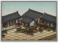

Requires
- Buildings: 
- Arts:

Enables
- Buildings:

Basic Building Statistics (can be modified by difficulty level, arts, skills, traits and retainers)
- Cost: 1600
- +500 to wealth from commerce in this province
- +10 per turn to town growth from commerce within this province
- Consumes food: 1
- Enables recruitment of Rank 1 metsuke
Clan Effects
- Each market chain building enables you to sustain one additional metsuke (to a maximum of 5)
Description
There is much to be learned from the prattle of merchants.
A rice exchange significantly improves a province's wealth and growth. Rather than each village relying on its own crops and living from harvest to harvest, an exchange allows merchants to buy up rice crops, and ship them to market as needed. Overall, the effect is to even out the good and bad harvests at some cost to the peasants, who may not always be able to afford the food they have grown. Merchants were part of the social class of chonin, or townsmen. This gave them few privileges compared to the samurai warrior class. However, they were able to amass considerable wealth. This helped them survive the transition from an age of warfare to an age of enforced peace under the Tokugawa Shogunate. Business went on as usual and, if anything, improved. In the long run, the samurai were not so fortunate: their social caste meant that they could not work and retain their honour as samurai. The strict social edicts of the Tokugawas didn't help either, and many samurai were reduced to penury when there was no longer constant warfare.